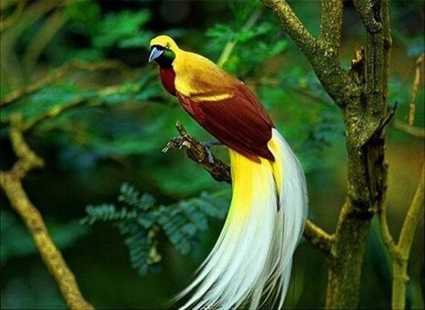

Ernakulam
Sprawling, residential Ernakulam is known for Marine Drive, a busy waterfront promenade where boats offer backwater cruises. The Kerala Folklore and Hill Palace museums explore local heritage through art and antiquities. Shops along Broadway and on MG Road sell fabrics, crafts, and spices, while modern Lulu Mall also has a cinema and an ice rink. Simple eateries serve Keralan specialties and South Indian seafood
Top Destinations
Vypin Island
Located at the distance of 5 km from the city of Ernakulam in Kerala, Vypin Island is sprawled over an area of 25 Km. It is one of the most densely populated islands in the world that connects Kochi by a series of bridges called Goshree bridges touching other two islands Mulavukadu and Vallarpadam and then end at Marine Drive, Kochi. The island also named as Vypeen is a fast-developing suburb of the city. It was formed in the year 1341 after a heavy flood. The beautiful Bungalow Heritage homestay is also located at Vpeeny which was built in the year 1930, representing a perfect blend of Kerala, Dutch and Portuguese architectures. Also, one can encounter the Portuguese Azhikotta fort (Pallipuram) here, which is one of the oldest European Forts in India built in the year 1503
Thattekad Bird Sanctuary
Blessed with so many natural wonders, Thattekad is a picturesque destination, masked in the glory of abundant flora and fauna. This wonderful place is positioned on the Njiyapilli Hill and is mainly famous for the Salim Ali Bird Sanctuary, named after the great Ornithologist, Dr. Salim Ali. This sanctuary was established in the year 1983 by the Kerala Government, on recommendation of Dr. Salim Ali in the early 1930s. This is the most popular bird sanctuary of India and houses about 280 rare species of water and land birds. The scenic beauty of Thattekad Bird Sanctuary cannot be described in words, it can only be felt and enjoyed! Visit India's most beautiful, Thattekad Bird Sanctuary and catch a glimpse of some of the most amazing birds and their landscapes that are hard to overlook. Sprawling over 25 km sq and at the distance of around 60 km towards the north-east of Kochi, Thattekkad Bird Sanctuary is located in the Kothamangalam Taluk of Ernakulam district on the northern bank of the Periyar River. In the year 1930, Dr. Salim Ali discovered Thattekad as the richest bird habitat of peninsular India and it was named as a Bird Sanctuary in the year 1983. Since the forest is covered with a huge variety of tropical deciduous and evergreen tree, it offers a safe paradise for birds. Hence, it's an interesting place to visit for birdies and wildlife enthusiasts.

Fort Kochi
Fort Kochi, the western part of the Kochi city of Ernakulam district in Kerala. It is about 12 km away from Ernakulam Town. Fort Kochi has played an important role in the history of Kerala. Fort Kochi also has several attractions like the Santa Cruz Basilica. Fort Kochi also houses many historical monuments such as the St. Francis Church, the first church of Vasco da Gama, the Dutch Seminary, the China Vela and many others. The Indian Navy’s ship, Dronacharya, is located in Fort Kochi. The Mattancherry Palace is close by. Fort Kochi was the first European township in Kerala. The Fort Kochi carnival celebrates New Year’s Eve every year. Thousands of people come to visit this carnival.